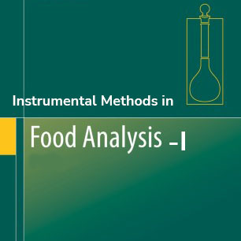
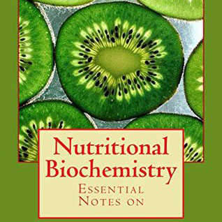
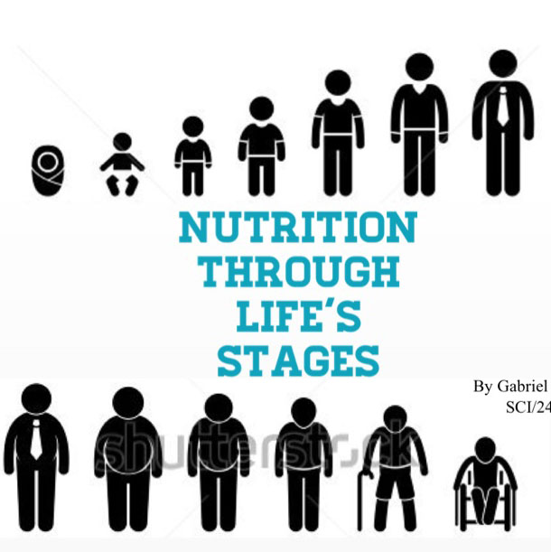
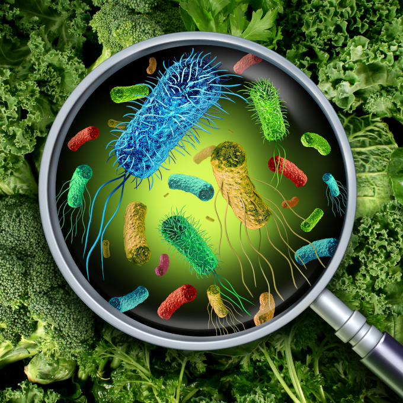

BSc in Food Science and Nutrition - 2nd Year 1st Semester
MM:DD:YYYY
Time
Contact CR
Section - A
Amit Hasan Pappu
FB
Call
Sheikh Rumki Rahman
FB
Call
Section - B
Amit Hasan Sany
FB
Call
Proma Debnath
FB
Call
FSN21313 - Human Physiology - II
FSN21314T - Food Safety and Regulations

FSN21315T - Instrumental Methods in FoodAnalysis-I

FSN21316T - Nutritional Biochemistry

FSN21317T - Nutrition Through Life Cycle

FSN21218P - Analysis of Foodborne Pathogens
Random Color Generator